Chapter 5. 다층 퍼셉트론(Multilayer Perceptron)¶
1절. MLP
2절. 경사하강법
3절. 학습률
1절. MLP¶
MLP(Multilayer Perceptron)¶
- 입력층과 출력층 사이에 은닉층(hidden layer)을 가진 퍼셉트론
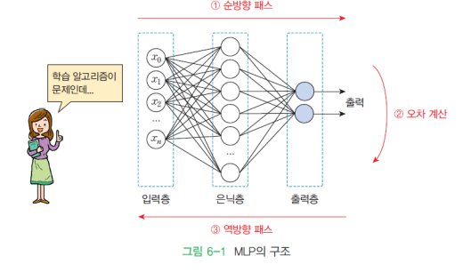
활성화 함수(Activation Function)¶
- 입력의 총합을 받아 출력값을 계산하는 함수
- 여러 가지 활성화 함수 존재
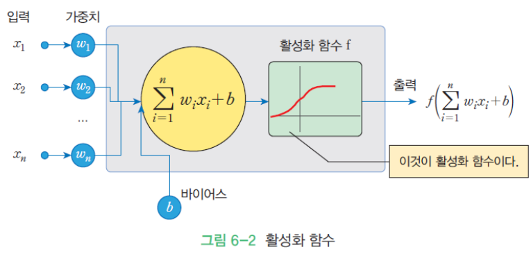
일반적으로 많이 사용되는 활성화 함수¶
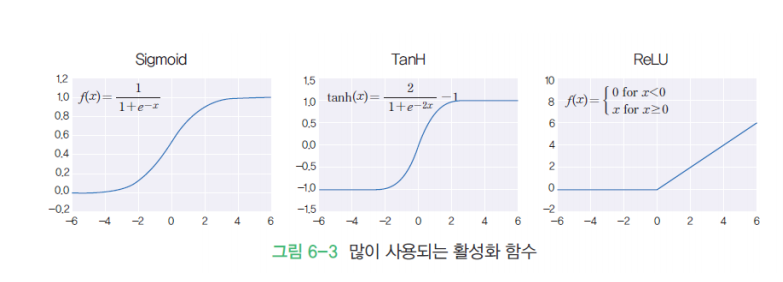
계단 함수¶
- 입력 신호의 총합이 0을 넘으면 1을, 그렇지 않으면 0을 출력하는 함수
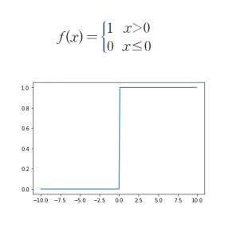
시그모이드 함수¶
- 1980년대부터 사용된 전통적인 활성화 함수
- S자 형태의 함수
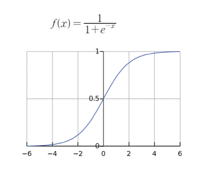
ReLU 함수(Rectifed Linear Unit Function)¶
- 최근에 가장 인기있는 활성화 함수
- 입력이 0을 넘으면 그대로 출력하고, 그렇지 않으면 0 출력
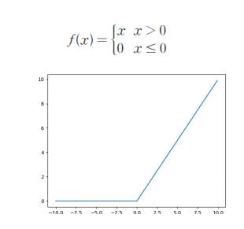
tanh 함수¶
- numpy에서 제공하고 있는 함수
- 별도의 함수 작성은 필요 X
- 시그모이드 함수와 매우 비슷하지만 출력값이 -1 ~ 1까지
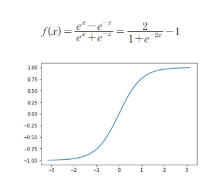
실습 - 활성화 함수 구현¶
- 하드 코딩 활성화 함수 구현
- 넘파이 배열을 받기 위한 변경
그래프 그리기¶
import numpy as np
import matplotlib.pyplot as plt
x = np.arange(-10.0, 10.0, 0.1)
y = step(x)
plt.plot(x, y)
plt.show()
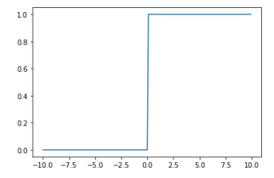
시그모이드 함수¶
import numpy as np
import matplotlib.pyplot as plt
def sigmoid(x):
return 1.0 / (1.0 + np.exp(-x))
x = np.arange(-10.0, 10.0, 0.1)
y = sigmoid(x)
plt.plot(x, y)
plt.show()
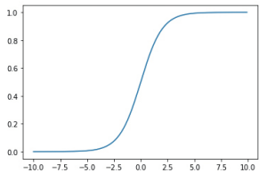
tanh 함수¶
import numpy as np
import matplotlib.pyplot as plt
x = np.linspace(-np.pi, np.pi, 60)
y = np.tanh(x)
plt.plot(x, y)
plt.show()
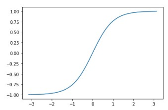
ReLU 함수¶
import numpy as np
import matplotlib.pyplot as plt
def relu(x):
return np.maximum(x, 0)
x = np.arange(-10.0, 10.0, 0.1)
y = relu(x)
plt.plot(x, y)
plt.show()
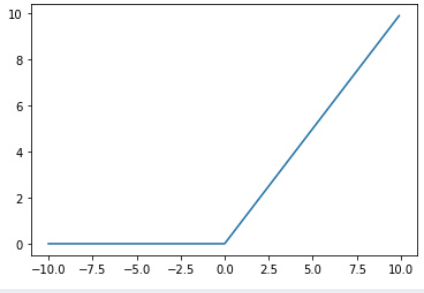
MLP의 순방향 패스¶
- 입력 신호가 입력층 유닛에 가해지고, 이들 입력 신호가 은닉층을 통해 출력층으로 전파되는 과정
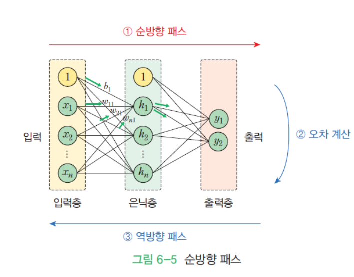
순방향 패스 계산 단계¶
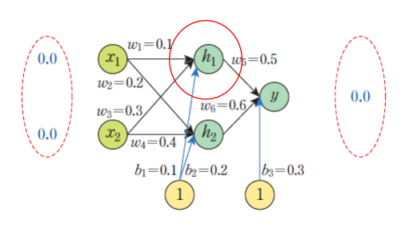
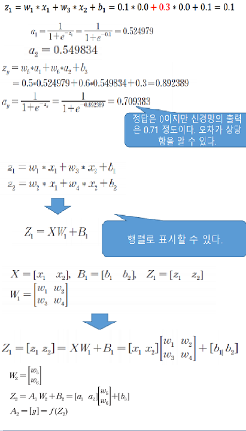
순방향 패스 코드¶
import numpy as np
# 시그모이드 함수
def actf(x):
return 1 / (1 + np.exp(-x))
# 시그모이드 함수 미분치
def actf_deriv(x):
return x * (1 - x)
# 입력유닛의 개수, 은닉유닛의 개수, 출력유닛의 개수
inputs, hiddens, outputs = 2, 2, 1
learning_rate = 0.2
# 훈련 샘플과 정답
X = np.array([[0, 0], [0, 1], [1, 0], [1, 1]])
T = np.array([[0], [1], [1], [0]])
W1 = np.array([[0.10, 0.20], [0.30, 0.40]])
W2 = np.array([[0.50], [0.60]])
B1 = np.array([0.1, 0.2])
B2 = np.array([0.3])
# 순방향 전파 계산
def predict(x):
layer0 = x # 입력을 layer0에 대입
Z1 = np.dot(layer0, W1)+B1 # 행렬 곱 계산
layer1 = actf(Z1) # 활성화 함수 적용
Z2 = np.dot(layer1, W2)+B2 # 행렬 곱 계산
layer2 = actf(Z2) # 활성화 함수 적용
return layer0, layer1, layer2
def test():
for x, y in zip(X, T):
x = np.reshape(x, (1, -1)) # x를 2차원 행렬로, 입력은 2차원
layer0, layer1, layer2 = predict(x)
print(x, y, layer2)
test()
# [[0 0]] [1] [[0.70938314]]
# [[0 1]] [0] [[0.72844306]]
# [[1 0]] [0] [[0.71791234]]
# [[1 1]] [1] [[0.73598705]]
# 학습이 없으므로 난수만 출력
손실 함수 계산¶
- 손실 함수(Loss Function)
- 오차 계산 함수
- 신경망에서 학습의 성과를 나타내는 지표
- 신경망에서 학습할 때 실제 출력과 원하는 출력 사이의 오차 이용
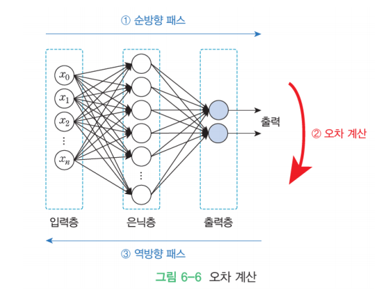
평균 제곱 오차(MSE)¶
- 예측값과 정답 간의 평균 제곱 오차
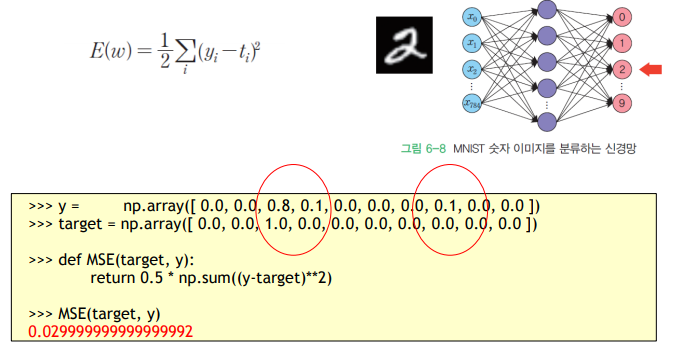
- 예측값과 정답의 차이가 큰 경우
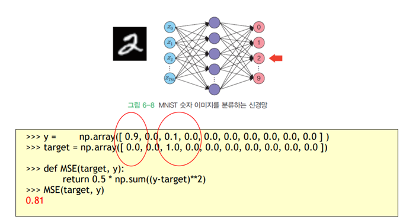
2절. 경사하강법¶
경사하강법¶
- 역전파 알고리즘
- 신경망 학습 문제를 최적화 문제(optimization)로 접근
- 손실함수 값(오차값)을 최소화하는 가중치 탐색
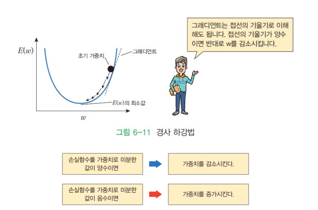
- 기울기 : 손실함수를 가중치로 미분한 값
실습¶
- 손실 함수
- \(y = {(x-3)}^2 + 10\)
- 그래디언트 : \(y' = 2x - 6\)
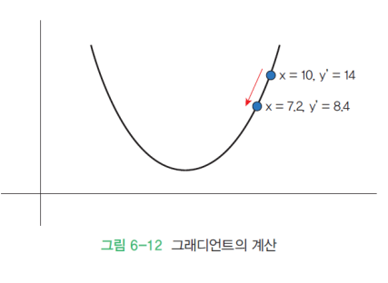
x = 10
# 정해지는 값
learning_rate = 0.2
precision = 0.00001
max_iterations = 100
# 손실함수를 람다식으로 정의
loss_func = lambda x : (x-3) ** 2 + 10
# 그래디언트를 람다식으로 정의
# 손실함수의 1차 미분값
gradient = lambda x : 2 * x - 6
# 그래디언트 하강법(높은 값에서부터 작은 값까지 하강)
for i in range(max_iterations):
x = x - learning_rate * gradient(x)
print("손실함수값(", x, ")=", loss_func(x))
print("최소값 = ", x)
# 손실함수값( 7.199999999999999 )= 27.639999999999993
# 손실함수값( 5.52 )= 16.350399999999997
# 손실함수값( 4.512 )= 12.286143999999998
# 손실함수값( 3.9071999999999996 )= 10.82301184
# 손실함수값( 3.54432 )= 10.2962842624
# 손실함수값( 3.3265919999999998 )= 10.106662334464
# 손실함수값( 3.1959551999999998 )= 10.03839844040704
# ...
# 손실함수값( 3.0000000000000004 )= 10.0
# 손실함수값( 3.0000000000000004 )= 10.0
# 손실함수값( 3.0000000000000004 )= 10.0
# 최소값 = 3.0000000000000004
2차원 그래디언트 시각화(3D)¶
from mpl_toolkits.mplot3d import axes3d
import matplotlib.pyplot as plt
import numpy as np
x = np.arange(-5, 5, 0.5)
y = np.arange(-5, 5, 0.5)
X, Y = np.meshgrid(x, y)
Z = X ** 2 + Y ** 2
fig = plt.figure(figsize = (6, 6))
ax = fig.add_subplot(111, projection = '3d')
# 3차원 그래프 그리기
ax.plot_surface(X, Y, Z)
plt.show()
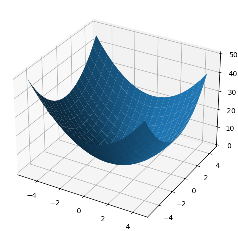
2차원 그래디언트 시각화(격자)¶
import matplotlib.pyplot as plt
import numpy as np
x = np.arange(-5, 5, 0.5)
y = np.arange(-5, 5, 0.5)
X, Y = np.meshgrid(x, y)
U = -2 * X
V = -2 * Y
plt.figure()
Q = plt.quiver(X, Y, U, V, units = 'width')
plt.show()
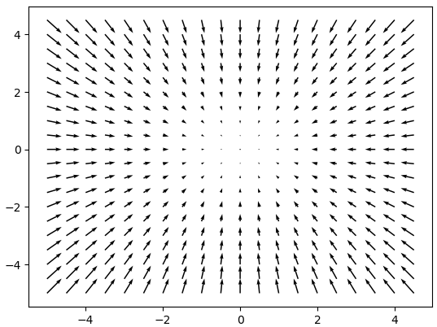
역전파(backpropogation) 학습 알고리즘¶
- 입력이 주어지면 순방향으로 계산하여 출력 계산 후 실제 출력과 우리가 원하는 출력 간의 오차 계산
- 오차를 역방향으로 전파하여 줄이는 방향으로 가중치 변경
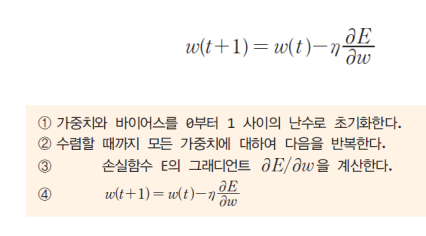
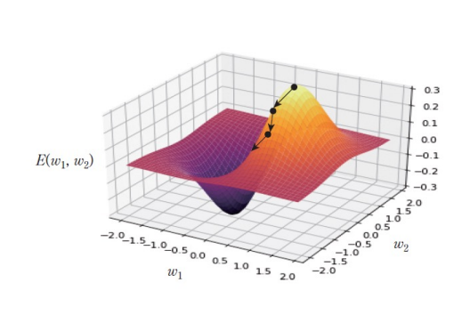
- 손실함수 E의 그래디언트 값
- 양수
- \(w(t)\)의 값이 커지고, \(w(t+1)\)의 값이 작아짐
- Sub를 진행하는 값이 커졌기 때문에 결과값이 작아짐
- 음수
- \(w(t)\)의 값이 작아지고, \(w(t+1)\)의 값이 커짐
- Sub를 진행하는 값이 없고 Add를 진행하는 값만 존재하기 때문에 결과값이 커짐
- 목표 : 정확한 지점을 찾아가는 것
역전파 - 체인룰¶
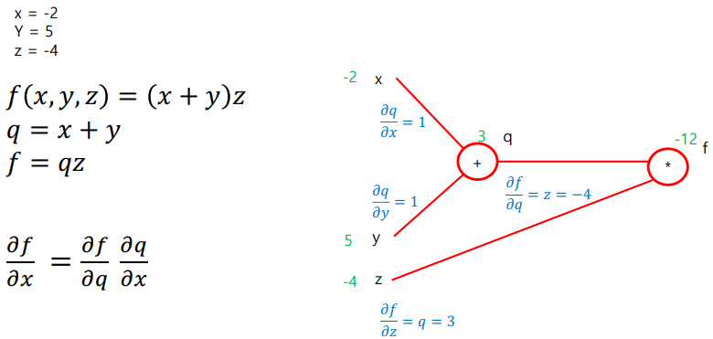
역전파 알고리즘의 유도¶
- 미분의 체인룰을 통해 유도 가능
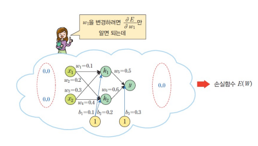
- 출력층 유닛
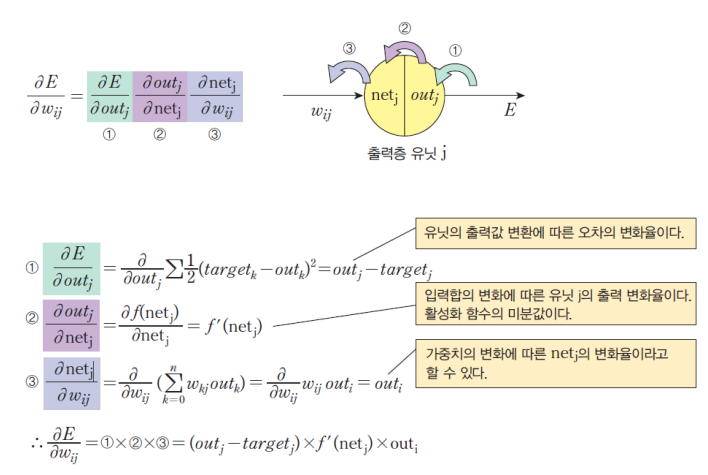
- 은닉층 유닛
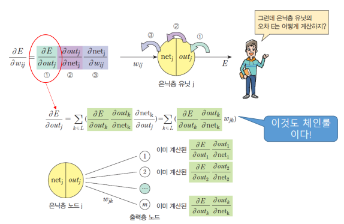
델타¶
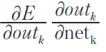
- 여러 문헌에서 델타라는 이름으로 불리는 값
- 가중치가 보는 유닛 k에서의 "오차"
- 신경망을 통해 역전파
역전파 알고리즘 정리¶
- 그래디언트는 델타의 유닛 출력값을 곱하면 계산 가능
- 델타는 신경망의 레이어에 따라 아래와 같이 구분해서 계산 가능
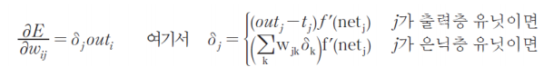
역전파 알고리즘 계산¶
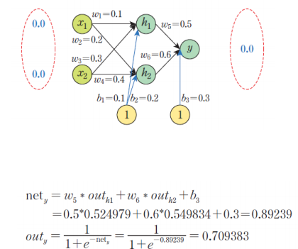
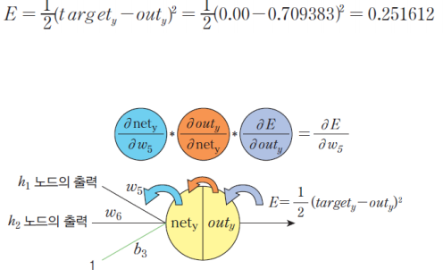
경사 하강법의 적용¶
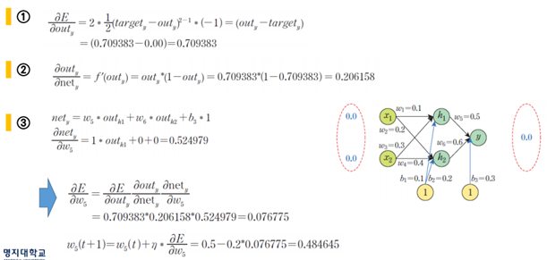
은닉층 -> 출력층의 가중치와 바이어스¶
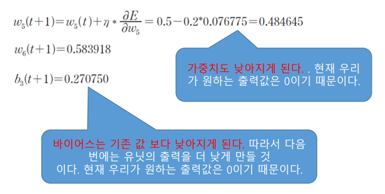
입력층 -> 은닉층의 가중치와 바이어스¶
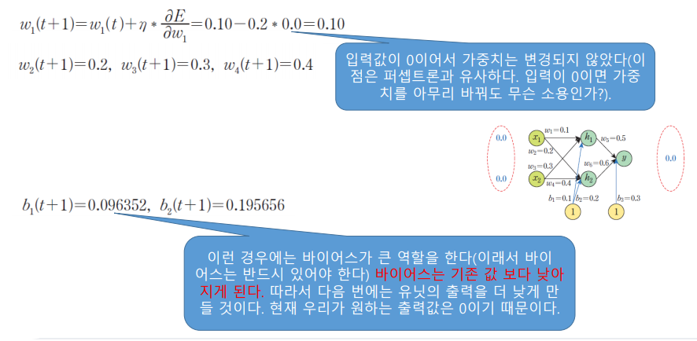
손실함수 평가¶
- 오차가 크게 줄어듦
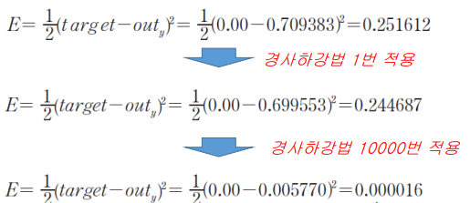
MLP 구현¶
import numpy as np
# 시그모이드 함수
def actf(x):
return 1/(1+np.exp(-x))
# 시그모이드 함수의 미분치
def actf_deriv(x):
return x*(1-x)
# 입력유닛의 개수, 은닉유닛의 개수, 출력유닛의 개수
inputs, hiddens, outputs = 2, 2, 1
learning_rate=0.2
# 훈련 샘플과 정답
X = np.array([[0, 0], [0, 1], [1, 0], [1, 1]])
T = np.array([[1], [0], [0], [1]])
순방향 전파 구현¶
W1 = np.array([[0.10,0.20], [0.30,0.40]])
W2 = np.array([[0.50],[0.60]])
B1 = np.array([0.1, 0.2])
B2 = np.array([0.3])
# 순방향 전파 계산
def predict(x):
layer0 = x
# 입력을 layer0에 대입
Z1 = np.dot(layer0, W1)+B1
# 행렬의 곱을 계산
layer1 = actf(Z1)
# 활성화 함수를 적용
Z2 = np.dot(layer1, W2)+B2
# 행렬의 곱을 계산
layer2 = actf(Z2)
# 활성화 함수를 적용
return layer0, layer1, layer2
오차 역전파 구현¶
# 역방향 전파 계산
def fit():
global W1, W2, B1, B2 # 우리는 외부에 정의된 변수를 변경해야 한다.
for i in range(90000): # 9만번 반복한다.
for x, y in zip(X, T): # 학습 샘플을 하나씩 꺼낸다.
x = np.reshape(x, (1, -1)) # 2차원 행렬로 만든다. ①
y = np.reshape(y, (1, -1)) # 2차원 행렬로 만든다.
layer0, layer1, layer2 = predict(x) # 순방향 계산
layer2_error = layer2-y # 오차 계산
layer2_delta = layer2_error*actf_deriv(layer2) # 출력층의 델타 계산
layer1_error = np.dot(layer2_delta, W2.T) # 은닉층의 오차 계산 ②
layer1_delta = layer1_error*actf_deriv(layer1) # 은닉층의 델타 계산 ③
W2 += -learning_rate*np.dot(layer1.T, layer2_delta) # ④
W1 += -learning_rate*np.dot(layer0.T, layer1_delta) #
B2 += -learning_rate*np.sum(layer2_delta, axis=0) # ⑤
B1 += -learning_rate*np.sum(layer1_delta, axis=0) #
def test():
for x, y in zip(X, T):
x = np.reshape(x, (1, -1))
# 하나의 샘플을 꺼내서 2차원 행렬
layer0, layer1, layer2 = predict(x)
print(x, y, layer2)
# 출력층의 값 출력
fit()
test()
# [[0 0]] [1] [[0.99196032]]
# [[0 1]] [0] [[0.00835708]]
# [[1 0]] [0] [[0.00836107]]
# [[1 1]] [1] [[0.98974873]]
3절. 학습률¶
가중치를 변경하는 2가지 방법¶
- 온라인 학습(Online Learning)
- 확률적 경사 하강법(Stochastic Gradient)
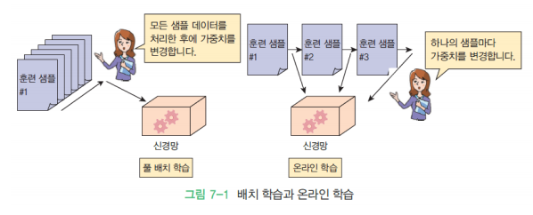
풀 배치 학습(Full Batch Learning)¶
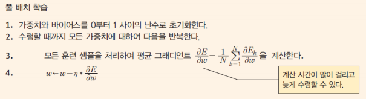
온라인 학습(확률적 경사 하강법)¶
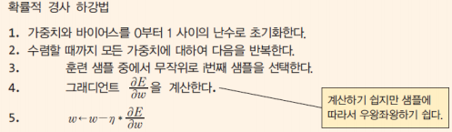
미니 배치 학습¶
- 온라인 학습과 풀 배치 학습의 중간 방법
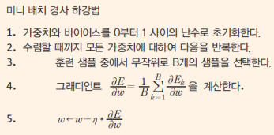
방법들의 비교¶
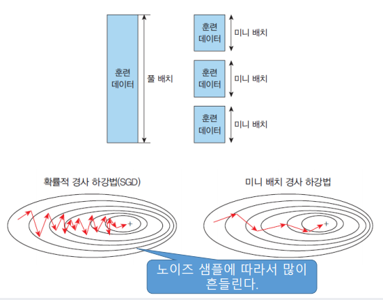
실습 - 미니 배치 학습¶
import numpy as np
import tensorflow as tf
# 학습 데이터와 테스트 데이터로 분리
(x_train, y_train), (x_test, y_test) = tf.keras.datasets.mnist.load_data()
data_size = x_train.shape[0]
batch_size = 12 # 배치 크기
selected = np.random.choice(data_size, batch_size) # 배치 크기만큼 랜덤 선택
print(selected)
x_batch = x_train[selected]
y_batch = y_train[selected]
# [58298 3085 27743 33570 35343 47286 18267 25804 4632 10890 44164 18822]
행렬로 미니 배치 구현¶
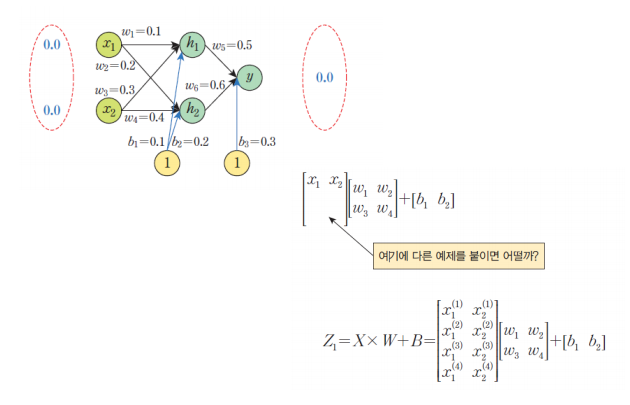
각 샘플 별 출력 계산¶
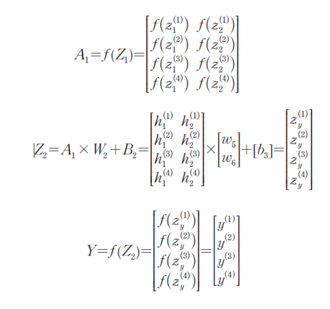
미니 배치 구현¶
import numpy as np
# 시그모이드 함수
def actf(x):
return 1 / (1 + np.exp(-x))
# 시그모이드 함수의 미분치
def actf_deriv(x):
return x * (1 - x)
# 입력유닛의 개수, 은닉유닛의 개수, 출력유닛의 개수
inputs, hiddens, outputs = 2, 2, 1
learning_rate = 0.5
# 훈련 입력과 출력
X = np.array([[0, 0], [0, 1], [1, 0], [1, 1]])
T = np.array([[0], [1], [1], [0]])
# 가중치를 –1.0에서 1.0 사이의 난수로 초기화
W1 = 2 * np.random.random((inputs, hiddens)) - 1
W2 = 2 * np.random.random((hiddens, outputs)) - 1
B1 = np.zeros(hiddens)
B2 = np.zeros(outputs)
# 순방향 전파 계산
def predict(x):
layer0 = x
Z1 = np.dot(layer0, W1)+B1 # 행렬 곱 계산
layer1 = actf(Z1) # 활성화 함수 적용
Z2 = np.dot(layer1, W2)+B2 # 행렬 곱 계산
layer2 = actf(Z2) # 활성화 함수 적용
return layer0, layer1, layer2 # 역방향 전파 계산
def fit():
global W1, W2, B1, B2
for i in range(60000):
layer0, layer1, layer2 = predict(X)
layer2_error = layer2-T
layer2_delta = layer2_error*actf_deriv(layer2)
layer1_error = np.dot(layer2_delta, W2.T)
layer1_delta = layer1_error*actf_deriv(layer1)
W2 += -learning_rate * np.dot(layer1.T, layer2_delta) / 4.0
W1 += -learning_rate * np.dot(layer0.T, layer1_delta) / 4.0
B2 += -learning_rate * np.sum(layer2_delta, axis = 0) / 4.0
B1 += -learning_rate * np.sum(layer1_delta, axis = 0) / 4.0
# 바이어스는 입력이 1이므로 단순히 합만 계산
def test():
for x, y in zip(X, T):
x = np.reshape(x, (1, -1)) # 2차원 형태
layer0, layer1, layer2 = predict(x)
print(x, y, layer2)
fit()
test()
# [[0 0]] [0] [[0.0124954]]
# [[0 1]] [1] [[0.98683933]]
# [[1 0]] [1] [[0.9869228]]
# [[1 1]] [0] [[0.01616628]]
학습률¶
- 한 번에 가중치를 얼마나 변경할 것인가 표현
- 모델의 성능에 심대한 영향을 끼치지만 설정하기 매우 어려움
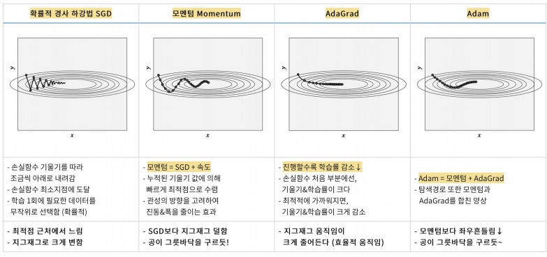
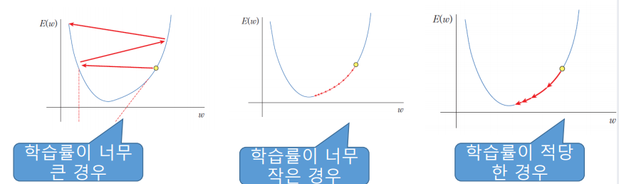
학습률을 설정 방법¶
모멘텀(momentum)¶
- 운동량으로 학습 속도를 가속시킬 목적으로 사용
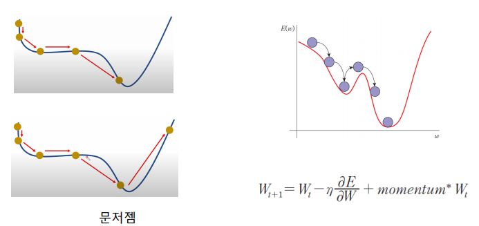
Adagrad¶
- 가변 학습률을 사용하는 방법
- SGD 방법을 개량한 최적화 방법
- 주된 방법은 학습률 감쇠(Learning Rate Decay)
- 학습률을 이전 단계의 기울기들을 누적한 값에 반비례하여 설정
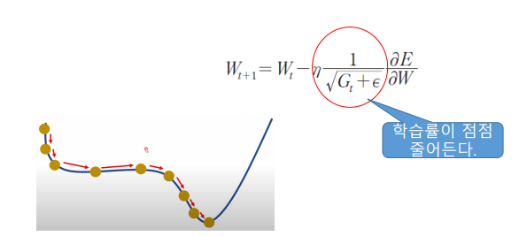
RMSprop¶
- Adagrad에 대한 수정판
- 그래디언트 누적 대신 지수 가중 이동 평균 사용
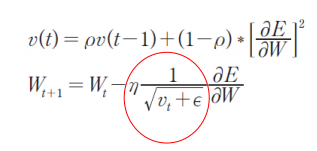
Adam¶
- Adaptive Moment Estimation의 약자
- (RMSprop + Mometum)
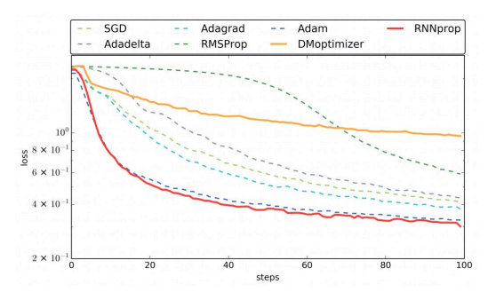